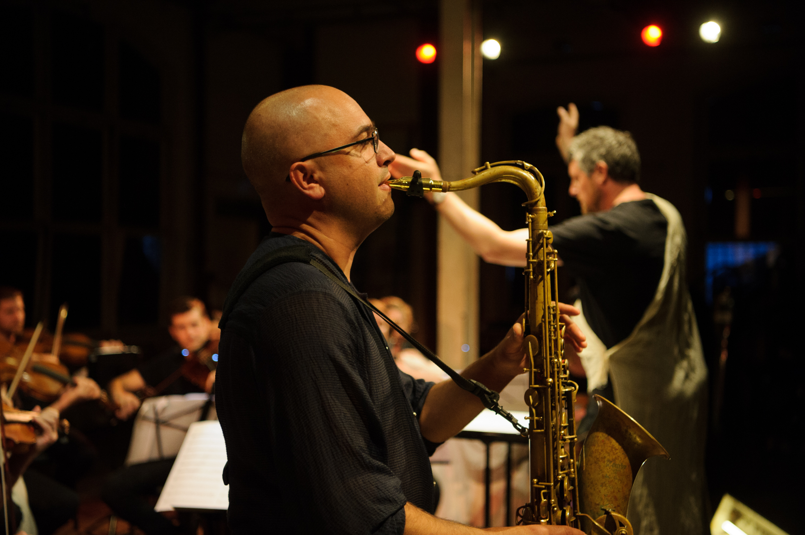
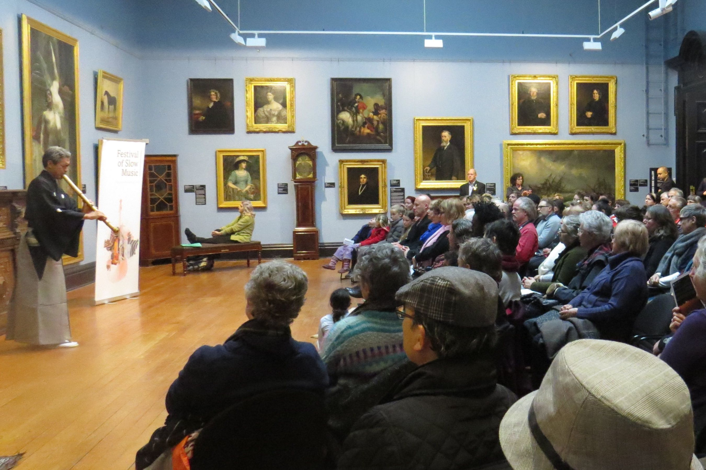
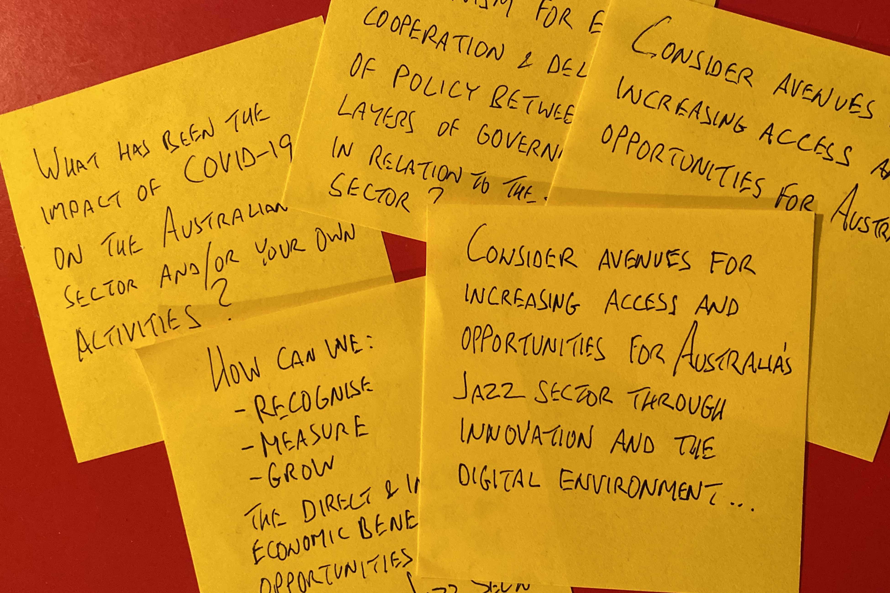
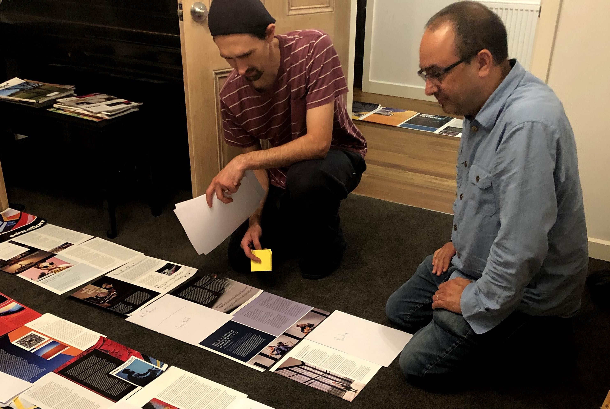

I am a Melbourne-based data specialist, with a vast and unique
background in the creative industries as performer, composer, sculptor,
educator, director, advocate, editor and consultant. Key to my successes
have been my creative thinking, ability to adapt, willingness to learn
and enjoyment of a job well done.
As a leader and promoter of my own ensembles, instigator of major
events and co-founder/editor of a national magazine, I have come to
understand my capacity to create something impactful because of the
creative perspective, dedication and enthusiasm I bring to each
project.
Below are examples of some of the arts-related projects that have
developed skills that have more recently seen me successfully build a
data pipeline for extracting, cleaning and analysing retail sales and
customer data, as well as contribute data solutions to projects in
health, education and public legislation, and complete my graduate
certificate studies with distinction.
|

|
|

|
Leadership and Strategic Planning
- As Lead Co-Artistic Director of Wangaratta Festival of Jazz &
Blues (2017-19), I established a partnership with Amersfoort Jazz
Festival and the World Jazz Network, which led to export/showcase
opportunities for Australian artists
- Invited member of Ballarat Live Music Advisory Committee (2016)
- Alumni of Australia Council Arts Leader Program (2017-18)
- I have led professional and community ensembles, such as the one-off
Spiderbait and Wangaratta Horns of Death featuring more than 60
musicians aged 10-70.
|
|
Project Management
- Founded, directed, promoted Festival of Slow Music, a nine-day
festival in Ballarat to stimulate artistic and business activity
(2013-15)
- 100:25:1 - I coordinated, promoted, performed and recorded 100 duets
in one month, and conducted research for social network analysis
- Recorded, released and promoted 26 albums - most under my own Fat
Rain music label, distributed on Bandcamp, Spotify and Apple Music
- Tour management for international artists visiting Australia,
coordinating major festival participation, travel logistics and
promotion
|
|
|
|

|
|

|
Stakeholder Engagement
- Initiated the online Australian Jazz Forum 2020, to consult the
national community to inform a parliamentary inquiry submission on
Australia’s creative industries. The result was over 80 participants
representing artists, venues, organisations, education institutions,
media and festivals. Collaboration was encouraged throuhgout and the
final submission shared with all and made public.
- At Wangaratta Festival of Jazz & Blues, I reported directly to
the board, worked with event management team, represented the artistic
panel, engaged with sponsors, venue owners, accommodation, tourism,
funding partners, artists, volunteers and audiences - the result was a
re-invigoration of the festival community spirit, new sponsors and
positive critical reviews.
|
|
Communication
- Co-founder and Editor of Dingo, a bi-annual 116pp magazine
celebrating Australian jazz, now in its 5th edition.
- Coordinated marketing campaigns including for Festival of Slow
Music, Melbourne Jazz Fringe Festival and album releases
- Regularly interviewed for radio and press for event/product
promotion
- Teaching group and individual lessons/workshops from primary to
masters level in instrumental and music-business skills at institutions
such as University of Melbourne, Melbourne Polytechnic, Blackburn High
School
|
Copyright © 2023 Adam Simmons, Inc. All rights reserved.